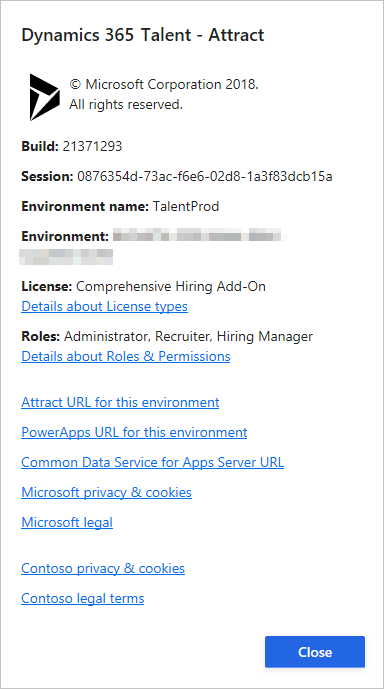

Setzen von Benutzerberechtigungen in Attract
Important
Dynamics 365 Talent: Attract- und Onboard-Apps werden eingestellt. Weitere Informationen finden Sie unter Einstellen von Dynamics 365 Talent: Attract- und Onboard-Apps.
Microsoft Dynamics 365 Talent: Attract verwendet rollenbasierte Sicherheit. Das bedeutet, dass der Zugriff nicht für einzelne Benutzer, sondern für Sicherheitsrollen gewährt wird, denen Benutzer zugewiesen werden. Ein Benutzer, der einer Sicherheitsrolle zugewiesen wird, besitzt Zugriff auf eine Gruppe von Rechten, die dieser Rolle zugeordnet sind.
Attract stellt fünf grundlegende Benutzerrollen bereit:
- Administrator
- Zukünftiger Vorgesetzter
- Personalbeschaffungsmitarbeiter
- Gesprächsleiter
- Schreibgeschützt
Die Administrator-Rolle ist die einzige Rolle, die berechtigt ist, andere Benutzer hinzuzufügen und ihre Berechtigungen zu ändern.
- Hinzufügen – Im Administratorcenter auf der Registerkarte Benutzerberechtigungen, wählen Sie Rollen zuweisen und suchen Sie nach dem Benutzer, den Sie hinzufügen möchten und weisen Sie dann die Berechtigung diesem Benutzer hinzu.
- Bearbeiten – Suchen Sie nach dem Benutzer oder suchen den Benutzer und wählen Bearbeiten, um die Berechtigungen zu ändern.
- Löschen – Wenn Sie die Berechtigungen eines Benutzers löschen, entfernen Sie den Benutzer nicht vom System. Allerdings schränken Sie den Zugriff und die Rechte des Benutzers in Attract ein. Beispielsweise ist Hilda der Personalerrolle zugewiesen und sie wird einem Einzelvorgang als Personalverantwortliche hinzugefügt. Wenn Hilda später von der Personalrolle entfernt wird, bleibt sie als zukünftiger Vorgesetzte im Einzelvorgang und hat noch immer Zugriff auf diesen Einzelvorgang. Allerdings kann sie keine anderen Einzelvorgänge erstellen.
Die folgenden Abschnitte enthalten eine allgemeine Beschreibung der jeweiligen Rolle. Die Tabellen weiter unten im Thema enthalten detaillierte Informationen.
Note
Einige Funktionen sind nur mit dem Comprehensive Hiring Add-On für Attract verfügbar.
Administrator
Benutzer, die der Rolle zugewiesen sind, können auf alle Daten in Attract zugreifen und diese ändern. Administratoren können Daten erstellen, lesen, aktualisieren und löschen. Zudem haben Sie Zugriff auf das Administratorencenter, in dem sie Attract konfigurieren und Benutzerinformationen einrichten können. Es wird empfohlen, dass mindestens eine Person der Administratorrolle zugewiesen wird. Standardmäßig wird der Umgebungsadministrator in Microsoft Power Apps als Administrator in Attract festgelegt. Wenn Sie sich für die Testversion von Attract angemeldet haben, wird die Administrator-Rolle Ihnen automatisch zugewiesen. Momentan Stellen erstellen, müssen Benutzer, der der Administratorrolle haben, die entweder Werbeoffizierrolle oder die Personalerrolle verfügen.
Zukünftiger Vorgesetzter
Benutzer, die der Personalerrolle zugewiesen werden, können Einzelvorgänge erstellen und Einzelvorgänge aktualisieren, die sie zuvor erstellt haben. Personalverantwortliche können nur eine begrenzte Anzahl von Aktivitäten für eine Stelle und die Bewerbung, die einer Stelle zugeordnet ist, ausführen. Nur Benutzer, die der Personalerrolle zugewiesen werden, können in einem Einstellungsteam als zukünftiger Vorgesetzter hinzugefügt werden.
Rolle des Personalbeschaffungsmitarbeiters
Benutzer, die der Personalbeschaffungsrolle zugewiesen werden, besitzen die Rechte zum Lesen, Erstellen, Aktualisieren und Löschen der Stellen, die sie erstellt haben. Sie haben außerdem vollständig Rechte zum Erstellen, Lesen, Aktualisieren und Löschen für die Bewerbungen, die den Stellen zugeordnet sind, die sie besitzen. Nur Benutzer, die der Personalbeschaffungsrolle zugewiesen werden, können in einem Einstellungsteam als Personalbeschaffer hinzugefügt werden.
Gesprächsleiter
Jeder Benutzer, der ein Microsoft Azure Active Directory (Azure AD)-Konto in der Organisation besitzt, kann einem Personalbeschaffungsteam als Befrager hinzugefügt werden. Benutzer, die der Befragungsrolle zugewiesen werden, können die Stellendetails und die Bewerberdaten für die Stelle sehen, für die sie im Einstellungsteam sind. Für diese Stellen können Befrager auch Einstellungsempfehlungen vornehmen und Rückmeldungen zu den Kandidaten bereitstellen. Diese können jedoch die Stellendetails oder Bewerberdaten nicht aktualisieren.
Schreibgeschützt
Benutzer, die der schreibgeschützten Rolle zugeordnet sind, erhalten nur Zugriff auf die Daten in der Attract-Umgebung. Diese können jedoch keine Daten erstellen oder bearbeiten.
Finden Sie heraus, welche Rollen Sie haben
Wählen Sie in Attract das Fragezeichen (?) in der oberen rechten Ecke der Seite aus.
Klicken Sie dann auf Info.
Sie sehen nun im Fenster, das angezeigt wird, welche Rollen Sie für Attract haben:

Delegate-Rollen
Für jede Stelle, für die sie im Einstellungsteam sind, können Personalbeschaffungsmanager einen oder mehrere Delegates auswählen. Diese können jedoch Delegates für andere Personen im Einstellungsteam nicht auswählen.
Delegates haben dieselben Rechte wie die Person, die sie bestimmte. Wenn beispielsweise ein als zukünftiger Vorgesetzter einen Delegate für sich selber für eine Stelle bestimmt, hat der Delegate die gleichen Rechte wie der Personalbeschaffungsmanager für diese Stelle. Delegates können andere Delegates nicht vom Einstellungsteam entfernen. Sie können auch die Person nicht entfernen, die sie als Delegate ausgewählt hat.
Jobdetails und Aktivitäten
Benutzer, die die Personalbeschaffungs- oder Personalbeschaffungsmanagerrolle haben, können Stellen erstellen. Die folgenden Rechte gelten für die Stellendetails und die Aktivitäte, die für die Stelle ausgeführt werden können.
| Daten oder Aktivitäten | Personalbeschaffungsmitarbeiter | Zukünftiger Vorgesetzter | Gesprächsleiter |
|---|---|---|---|
| Filter Einzelvorgangsstatus | Erstellen, Lesen, Aktualisieren und Löschen für Stellen, für die der Benutzer im Einstellungsteam ist | Erstellen, Lesen, Aktualisieren und Löschen für Stellen, für die der Benutzer im Einstellungsteam ist | Schreibgeschützt |
| Einstellungsteam | Erstellen, Lesen, Aktualisieren und Löschen für Stellen, für die der Benutzer im Einstellungsteam ist | Erstellen, Lesen, Aktualisieren und Löschen für Stellen, für die der Benutzer im Einstellungsteam ist | Schreibgeschützt |
| Stellenausschreibung | Erstellen, Lesen, Aktualisieren und Löschen für Stellen, für die der Benutzer im Einstellungsteam ist | Schreibgeschützt | Schreibgeschützt |
| Bearbeiten | Erstellen, Lesen, Aktualisieren und Löschen für Stellen, für die der Benutzer im Einstellungsteam ist | Erstellen, Lesen, Aktualisieren und Löschen für Stellen, für die der Benutzer im Einstellungsteam ist | Schreibgeschützt |
| Bewerber hinzufügen | Hinzufügen von Bewerbern für Stellen, für die der Benutzer im Einstellungsteam ist | Hinzufügen von Bewerbern für Stellen, für die der Benutzer im Einstellungsteam ist | Nicht zulässig |
| Interessenten hinzufügen | Hinzufügen von Interessenten für Stellen, für die der Benutzer im Einstellungsteam ist | Eine Konfigurationsoption in der Aktivitäteneinrichtung des Interessent steuert, ob die Befrager Interessenten hinzufügen und anzeigen können. | Nicht zulässig |
| Stelle aktivieren | Stellen aktivieren, für die der Benutzer im Einstellungsteam ist | Stellen aktivieren, für die der Benutzer im Einstellungsteam ist | Nicht zulässig |
| Stelle schließen | Stellen beenden, für die der Benutzer im Einstellungsteam ist | Nicht zulässig | Nicht zulässig |
| Einzelvorgang löschen | Stellen löschen, für die der Benutzer im Einstellungsteam ist | Nur wenn keine Bewerber der Stelle hinzugefügt wurden | Nicht zulässig |
| Bewerber löschen | Bewerber löschen, wenn der Benutzer im Einstellungsteam ist | Nicht zulässig | Nicht zulässig |
Bewerbungsdetails und Aktivitäten
Die folgenden Rechte gelten für die stellenspezifischen Daten für Bewerber und die Aktivitäten, die für die Bewerbungen ausgeführt werden können.
| Daten oder Aktivitäten | Personalbeschaffungsmitarbeiter | Zukünftiger Vorgesetzter | Gesprächsleiter |
|---|---|---|---|
| Bewerbungsdokumente | Erstellen, Lesen, Aktualisieren und Löschen für Stellen, für die der Benutzer im Einstellungsteam ist | Erstellen, Lesen, Aktualisieren und Löschen für Stellen, für die der Benutzer im Einstellungsteam ist | Schreibgeschützt |
| Anwendungsnotizen | Erstellen, Lesen, Aktualisieren und Löschen für Stellen, für die der Benutzer im Einstellungsteam ist | Erstellen, Lesen, Aktualisieren und Löschen für Stellen, für die der Benutzer im Einstellungsteam ist | Schreibgeschützt |
| Bewerbungsaktivität | Anzeigen, ob der Benutzer im Einstellungsteam ist | Anzeigen, ob der Benutzer im Einstellungsteam ist | Schreibgeschützt |
| Rückmeldung zur Bewerbung | Hinzufügen und alle Rückmeldung anzeigen, wenn der Benutzer im Einstellungsteam ist | Hinzufügen und alle Rückmeldung anzeigen, wenn der Benutzer im Einstellungsteam ist | Kann Rückmeldungen hinzufügen ** |
| Bewerbung abgelehnt | Kann zurückweisen, wenn der Benutzer im Einstellungsteam ist | Nicht zulässig | Nicht zulässig |
| Zu nächster Phase | Kann zurückweisen, wenn der Benutzer im Einstellungsteam ist | Kann weiter machen, wenn der Benutzer im Einstellungsteam ist | Nicht zulässig |
| Verwaltung des Startangebots | Kann Angebotsverwaltung beginnen | Es gibt eine Konfigurationsoption auf der Angebotaktivität. | Nicht zulässig |
** Eine Konfigurationsoption in der Feedback-Aktivitätseinrichtung steuert, ob der Befrager die Rückmeldungen der anderen sehen kann.
Vorlagen verarbeiten
Die folgenden Berechtigungen gelten für die Vorlagen für die Einstellungsprozesse. Die Möglichkeit von Teammitgliedern, Vorlagen zu erstellen und zu bearbeiten wird in Vorlagenverwaltung im Administratorencenter konfiguriert. Wenn die Vorlagenverwaltung aktiviert ist, können Rekrutierer und Personalbeschaffungsmanager ihre eigenen Prozeßvorlagen erstellen und bearbeiten. Wenn die Vorlagenverwaltung deaktiviert ist, können nur Administratoren Prozeßvorlagen erstellen und bearbeiten. In der folgenden Tabelle wird vorausgesetzt, dass die Vorlagenverwaltung aktiviert wurde.
| Daten | Personalbeschaffungsmitarbeiter | Zukünftiger Vorgesetzter | Gesprächsleiter |
|---|---|---|---|
| Vorlagen verarbeiten | Vollständige Rechte für Vorlagen, die der Benutzer erstellt | Vollständige Rechte für Vorlagen, die der Benutzer erstellt | Kein Zugriff |
E-Mail und E-Mail-Vorlagen
Die folgenden Rechte gelten für die E-Mail-Vorlagen und die Aktivitäten, die für die E-Mails ausgeführt werden können. Nur Administratoren können E-Mail-Vorlagen erstellen und bearbeiten.
| Daten oder Aktivitäten | Personalbeschaffungsmitarbeiter | Zukünftiger Vorgesetzter | Gesprächsleiter |
|---|---|---|---|
| E-Mail-Vorlagen | Schreibgeschützter Zugang | Schreibgeschützter Zugang | Kein Zugriff |
| E-Mail senden | Senden pro Aktivität | Senden pro Aktivität | Kein Zugriff |
| E-Mail-Inhalt bearbeiten | E-Mail-Inhalt bearbeiten | E-Mail-Inhalt bearbeiten | Kein Zugriff |
Talentpools
Die folgenden Rechte gelten für Talentschmieden. Talentschmieden werden nur der Person angezeigt, die sie erstellt hat, es sei denn, dass diese Person beschließt, sie freizugeben. Kandidatensuche kann verwendet werden, um für Kandidaten zu suchen, die nicht in einem benannten Pool hinzugefügt wurden.
| Daten oder Aktivitäten | Personalbeschaffungsmitarbeiter | Zukünftiger Vorgesetzter | Gesprächsleiter |
|---|---|---|---|
| Bezeichneter Pool | Vollständige Rechte für Pools , die der Benutzer erstellt | Vollständige Rechte für Pools , die der Benutzer erstellt | Kein Zugriff |
| Freigegebener Pool | Nur Pools, die der Benutzer erstellt | Nur Pools, die der Benutzer erstellt | Kein Zugriff |
| Kandidatensuche | Vollständige Suchfunktionen | Vollständige Suchfunktionen | Kein Zugriff |
Kandidaten
Kandidaten sind Personen, die einer Talentschmiede hinzugefügt wurden, werden jedoch nicht einer Stelle zugeordnet.
| Daten | Personalbeschaffungsmitarbeiter | Zukünftiger Vorgesetzter | Gesprächsleiter |
|---|---|---|---|
| Profile - Kandidatendetails | Erstellen, lesen, aktualisieren und löschen | Erstellen, lesen, aktualisieren und löschen | Kein Zugriff |
| Dokumente | Erstellen, lesen, aktualisieren und löschen | Erstellen, lesen, aktualisieren und löschen | Kein Zugriff |